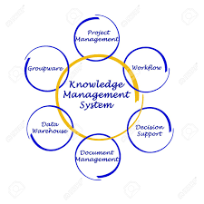

La información es un recurso clave en las empresas, ya que permite tomar decisiones estratégicas,
tácticas y operativas. Una buena gestión de la información ayuda a:
Mejorar la eficiencia operativa.
Identificar oportunidades de mercado.
Reducir riesgos.
Optimizar recursos.
Sistemas de Información
Un Sistema de Información (SI) es un conjunto organizado de elementos (personas, datos, procesos,
tecnología) que recolecta, procesa, almacena y distribuye información para apoyar la toma de decisiones
y el control en una organización.
Su propósito principal es transformar datos en información útil.
Sistemas de procesamiento de transacciones (TPS)
Registran las operaciones diarias (ventas, pagos, inventarios).
Ejemplo: sistema de punto de venta (POS).
Sistemas de información gerencial (MIS)
Generan informes para los mandos intermedios.
Ayudan en decisiones rutinarias.
Sistemas de soporte a decisiones (DSS)
Brindan análisis y modelos para decisiones no rutinarias.
Incluyen herramientas estadísticas y simulaciones.
Sistemas de información ejecutiva (EIS)
Proveen datos clave a la alta dirección.
Visualizan indicadores estratégicos.
Sistemas de planificación de recursos empresariales (ERP)
Integran todos los procesos y datos de una empresa en una única plataforma.
Sistemas de gestión del conocimiento (KMS)
Facilitan la creación y el uso del conocimiento organizacional.

Componentes de los sistemas de información
Hardware:
Equipos físicos como computadoras, servidores, redes, dispositivos móviles.
Software:
Programas y aplicaciones que procesan los datos.
Datos:
Materia prima del sistema; deben ser organizados y relevantes.
Personas:
Usuarios que interactúan con el sistema y toman decisiones.
Procesos:
Conjunto de actividades y reglas que transforman los datos en información útil.
Semana 10
Computación en la Nube
La computación en la nube es un modelo que permite el acceso remoto a servicios informáticos a través de
internet. En lugar de almacenar datos o ejecutar aplicaciones en un servidor o computadora local, todo
se aloja en servidores externos que se encuentran en centros de datos distribuidos en diferentes partes
del mundo.Cuando una empresa o usuario necesita potencia informática (almacenamiento, servidores,
software, redes, bases de datos, etc.), puede alquilar estos recursos a un proveedor de nube como Amazon
Web Services (AWS), Microsoft Azure o Google Cloud Platform, y pagar solo por lo que usa.
Ventajas
Acceso desde cualquier lugar y dispositivo.
Reducción de costos en infraestructura.
Escalabilidad (aumentar o reducir recursos según necesidad).
Seguridad y respaldo de datos.
Actualizaciones automáticas.
Ejemplos de servicios en la nube
Google Drive, Dropbox (almacenamiento).
Amazon Web Services (AWS), Microsoft Azure, Google Cloud Platform (servicios completos en la
nube).
Microsoft 365, Gmail (software como servicio).
Modelos de Despliegue en la Nube
Nube Pública (Public Cloud)
Los servicios son ofrecidos por proveedores como AWS, Azure, Google Cloud.
Nube Privada
Infraestructura dedicada a una sola organización.
Nube Híbrida (Hybrid Cloud)
Combinación de nube pública y privada.
Nube Comunitaria (Community Cloud)
Compartida por varias organizaciones con intereses comunes (por ejemplo, hospitales o
universidades).
Semana 11
Administración en la Nube
La administración en la nube se refiere al conjunto de procesos, herramientas y políticas utilizadas para
controlar y supervisar recursos y servicios informáticos basados en la nube. Esto incluye servidores,
bases de datos, almacenamiento, redes, seguridad y aplicaciones desplegadas en plataformas de nube
pública, privada o híbrida.
Funciones Principales
Monitoreo del Rendimiento
Supervisa el uso de recursos (CPU, memoria, red).
Detecta cuellos de botella o interrupciones en los servicios.
Aprovisionamiento y Desaprovisionamiento de Recursos
Permite agregar o eliminar recursos automáticamente (escalado).
Asigna recursos según demanda (auto-scaling).
Gestión de Costos y Facturación
Controla el gasto en la nube.
Genera reportes de consumo por servicios, usuarios o proyectos.
Seguridad y Cumplimiento
Configura accesos, cifrado, autenticación.
Asegura que se cumplan normativas como GDPR, HIPAA, etc.
Automatización y Orquestación
Usa scripts y herramientas para automatizar tareas rutinarias.
Coordina múltiples servicios y flujos de trabajo..
Backups y Recuperación ante Desastres
Administra copias de seguridad.
Permite recuperación rápida ante fallas o pérdida de datos.
Tecnologías Utilizadas en la Administración en la Nube
Plataformas de Nube
Amazon Web Services (AWS)
Microsoft Azure
Google Cloud Platform (GCP)
IBM Cloud, Oracle Cloud
Herramientas de Gestión
Terraform, Ansible, Puppet, Chef (automatización y aprovisionamiento)
Kubernetes (orquestación de contenedores)
CloudWatch (AWS), Azure Monitor, Stackdriver (GCP) (monitoreo)
Semana 12
Infraestructura de TI
La infraestructura de TI es el conjunto de hardware, software, redes, instalaciones y servicios
utilizados para desarrollar, probar, operar, monitorear, gestionar y soportar servicios y aplicaciones
de tecnología de la información.
Componentes de la Infraestructura de TI
Hardware
Servidores, computadoras, dispositivos de red, centros de datos, almacenamiento físico (discos
duros, SSD).